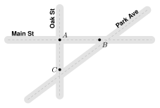
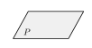
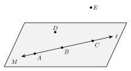

1.1 - Points, Lines, Segments, and Angles
Look at this map. Three straight streets cross each other.

Each corner is one exact spot on the map. Each street is straight. Where two streets cross, they make a corner that opens a certain amount.
Geometry has a word for each of these things. A corner is a point. A straight street is part of a line. Two streets that leave the same corner make an angle. In this lesson you learn these words and the symbols we use to write them.
point, line, plane, collinear, coplanar, segment, endpoint, ray, opposite rays, angle, vertex, degree, acute angle, right angle, obtuse angle, straight angle
Printable Guided Notes for this lesson (fill-in notes to print and write on)
🔥 Warm Up
Plot the points \(A(3, 2)\), \(B(-3, 2)\), and \(C(-3, -4)\) on a coordinate plane.
Draw a path from \(A\) to \(B\). Then draw a path from \(B\) to \(C\). What kind of corner does the path make at \(B\)?
Solve \(x + 35 = 90\).
👥 Learn Together
1.1.1 - Points, Lines, and Planes
The tip of a sharp pencil makes a tiny dot. In geometry, a point is an exact location. It has no size at all. We name a point with a capital letter.
A line is straight and goes on forever in both directions. We draw an arrow on each end to show that it never stops.
A plane is a flat surface that goes on forever in every direction. A floor or a wall is part of a plane.
| Object | Picture | Name | Symbol |
|---|---|---|---|
| point |  |
point \(A\) | \(A\) |
| line |  |
line \(AB\), or one small letter like line \(\ell\) | \(\overleftrightarrow{AB}\) |
| plane |  |
plane \(P\), or three points in it that are not on one line |
Through any two points there is exactly one line.
Points that lie on the same line are collinear. Points that lie in the same plane are coplanar.
Example 1: Points, lines, and planes

Name line \(\ell\) another way.
Use any two points on the line: \(\overleftrightarrow{AB}\). (\(\overleftrightarrow{AC}\) and \(\overleftrightarrow{BC}\) also work.)
Name three collinear points.
\(A\), \(B\), and \(C\). They are all on line \(\ell\).
Are \(A\), \(B\), and \(D\) collinear?
No. Point \(D\) is not on line \(\ell\).
Name a point that is not in plane \(M\).
Point \(E\).
Name line \(\ell\) using points \(B\) and \(C\).
Name three points in plane \(M\) that are not collinear.
\(\overleftrightarrow{BC}\) (or \(\overleftrightarrow{CB}\))
\(A\), \(B\), and \(D\). (Any two of \(A\), \(B\), \(C\) with point \(D\) also work.)
1.1.2 - Segments and Rays
A real street does not go on forever. It starts at one corner and stops at another. In geometry, part of a line with two ends is a segment. The two ends are its endpoints.
A flashlight beam starts at the flashlight and keeps going. In geometry, part of a line that starts at one endpoint and goes on forever in one direction is a ray.
| Object | Picture | Name | Symbol |
|---|---|---|---|
| segment | segment \(AB\) | \(\overline{AB}\) | |
| ray | ray \(AB\) | \(\overrightarrow{AB}\) |
\(\overline{AB}\) and \(\overline{BA}\) are the same segment.
\(\overrightarrow{AB}\) and \(\overrightarrow{BA}\) are different rays. \(\overrightarrow{AB}\) starts at \(A\). \(\overrightarrow{BA}\) starts at \(B\). The first letter of a ray is always its endpoint.
\(\overline{AB}\), with a bar, is the segment. It is something you can draw.
\(AB\), with no bar, is the length of the segment. It is a number, like \(AB = 5\).
Example 2: Opposite rays

Name the two rays that start at \(Q\).
\(\overrightarrow{QP}\) and \(\overrightarrow{QR}\).
These two rays have the same endpoint and go in opposite directions. Together they make a line. They are opposite rays.
Name every segment in the figure.
\(\overline{PQ}\), \(\overline{QR}\), and \(\overline{PR}\).
Is \(\overrightarrow{PQ}\) the same ray as \(\overrightarrow{PR}\)?
Is \(\overrightarrow{QP}\) the same ray as \(\overrightarrow{PQ}\)?
Yes. Both start at \(P\) and go to the right forever. They pass through the same points.
No. \(\overrightarrow{QP}\) starts at \(Q\) and goes left. \(\overrightarrow{PQ}\) starts at \(P\) and goes right.
1.1.3 - Angles
Look at corner \(A\) on the street map. Main St and Oak St both leave corner \(A\), in two different directions. That makes an angle.
An angle is two rays with the same endpoint. The rays are the sides of the angle. The shared endpoint is the vertex.

You can name this angle three ways:
- \(\angle ABC\) or \(\angle CBA\): three letters, with the vertex in the middle
- \(\angle B\): the vertex only
- \(\angle 1\): the number written inside the angle
We measure angles in degrees (\(^\circ\)). One full turn is \(360^\circ\). This angle measures \(130^\circ\). We write \(m\angle ABC = 130^\circ\). Read it as “the measure of angle \(ABC\) is 130 degrees.”
Example 3: Angles that share a vertex

Name the three angles that have their vertex at \(B\).
\(\angle ABC\), \(\angle CBD\), and \(\angle ABD\).
In Example 3, the name \(\angle B\) could mean any of the three angles. When two or more angles share a vertex, always use three letters.
Name \(\angle CBD\) another way with three letters.
Which of the three angles is the largest?
\(\angle DBC\)
\(\angle ABD\). It is made of the other two angles together.
1.1.4 - Classifying Angles
We sort angles into four types by their measure.

| Type | Measure |
|---|---|
| acute | more than \(0^\circ\) and less than \(90^\circ\) |
| right | exactly \(90^\circ\) |
| obtuse | more than \(90^\circ\) and less than \(180^\circ\) |
| straight | exactly \(180^\circ\) |
A small square at the vertex means the angle is a right angle.
Example 4: Angles on a clock

The hands of a clock make an angle. What angle do they make at 2:00?
A full turn is \(360^\circ\), and a clock has 12 hour marks. So the angle from one hour mark to the next is
\[ 360^\circ \div 12 = 30^\circ. \]
At 2:00 the hands are 2 hour marks apart:
\[ 2 \times 30^\circ = 60^\circ. \]
\(60^\circ\) is less than \(90^\circ\), so the angle is acute.
The hands are 5 hour marks apart: \(5 \times 30^\circ = 150^\circ\).
\(150^\circ\) is between \(90^\circ\) and \(180^\circ\), so the angle is obtuse.
1.1.5 - What a Figure Shows
A drawing can fool your eyes. In geometry, we only trust two things: what we are told, and what the figure marks.
- A small square at a vertex means a right angle.
- Matching tick marks mean segments have the same length.
Example 5: Marks and looks

Which angle is a right angle for sure?
\(\angle 1\). It has the square mark.
Is \(\angle 2\) a right angle?
We cannot tell. It looks close to \(90^\circ\), but it has no mark. (It really measures \(86^\circ\).)
Which segments have the same length for sure?
\(\overline{AB}\) and \(\overline{CD}\). They have matching tick marks, so \(AB = CD\).
Do \(\overline{EF}\) and \(\overline{GH}\) have the same length?
We cannot tell. They have no marks. (\(\overline{GH}\) is a little longer.)
Remember that lines go on forever. A drawing shows only part of a line.
Yes. On the page they do not touch. But lines go on forever. These two lines get closer as they go to the right, so they meet past the edge of the page.

✍️ Practice On Your Own
Use the figure for problems 1 to 4.

Name line \(n\) two other ways.
Name three collinear points.
Name a point in plane \(Q\) that is not on line \(n\).
Name a point that is not in plane \(Q\).
Write the symbol.
The segment with endpoints \(R\) and \(S\).
The ray that starts at \(T\) and goes through \(U\).
The line through \(M\) and \(N\).
The length of the segment with endpoints \(X\) and \(Y\).
True or false? Explain your answer.
\(\overline{GH}\) and \(\overline{HG}\) are the same segment.
\(\overrightarrow{GH}\) and \(\overrightarrow{HG}\) are the same ray.
Use the figure for problems 11 to 14.
Name the three angles that have their vertex at \(K\).
Why is \(\angle K\) not a good name for any of these angles?
Classify \(\angle LKM\) as acute, right, obtuse, or straight.
Classify \(\angle JKM\) as acute, right, obtuse, or straight.
Classify each angle as acute, right, obtuse, or straight.
\(12^\circ\)
\(90^\circ\)
\(145^\circ\)
\(180^\circ\)
Find the angle between the hands of a clock. Then classify the angle.
3:00
4:00
6:00
1:00
What does the figure show? The figure looks like a square. For problems 23 to 26, write must be true or cannot tell.

\(\angle A\) is a right angle.
\(\angle C\) is a right angle.
\(AB = BC\)
\(CD = DA\)
Is \(ABCD\) a square? Explain how you know.
Test practice
Points \(A\), \(B\), and \(C\) are collinear, and point \(B\) is between \(A\) and \(C\). Which statement is true?
A. \(\overrightarrow{BA}\) and \(\overrightarrow{BC}\) are opposite rays.
B. \(\overrightarrow{AB}\) and \(\overrightarrow{BC}\) are opposite rays.
C. \(\overrightarrow{BA}\) and \(\overrightarrow{AB}\) are the same ray.
D. \(\overline{AB}\) is longer than \(\overline{AC}\).The measure of an angle is 3 times \(32^\circ\). Which word describes the angle?
A. acute
B. right
C. obtuse
D. straight
Challenge
- Four points lie in a plane. No three of them are collinear. How many different lines can you draw through two of the points? Draw a picture to check.